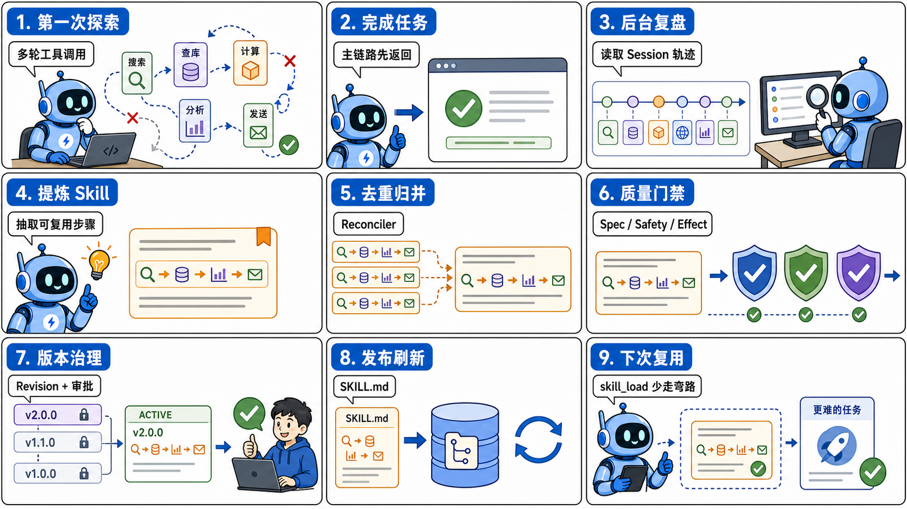
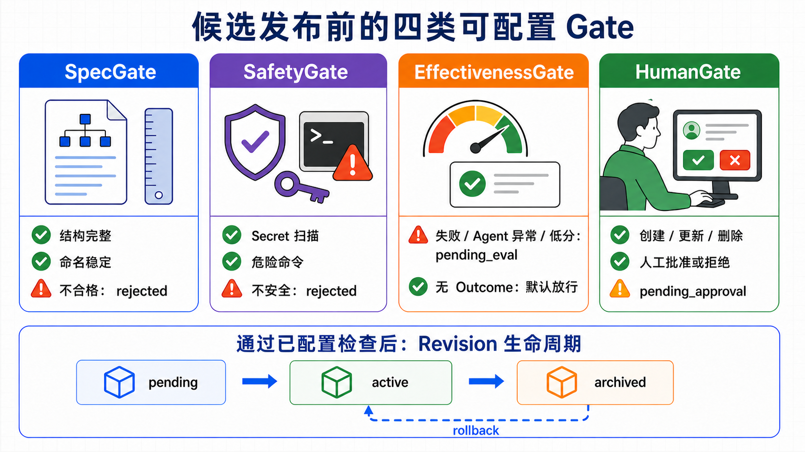
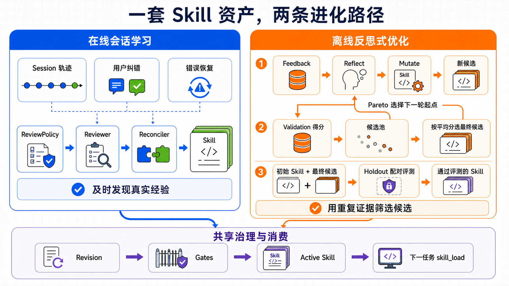
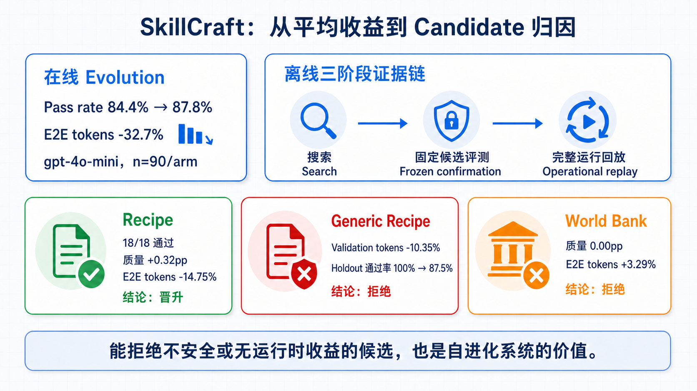

tRPC-Agent-Go Evolution：Agent 自进化的在线学习、离线优化与评测
当 Agent 从“把这一次做完”走向“下一次做得更好”，系统还需要保存做事的方法：工具怎样组合、失败怎样恢复、结果怎样验收。Evolution 把执行过程整理成 Skill，再通过评测、审批、发布和回滚，让后续任务可以复用这些方法。本文从 Hermes Agent 的程序性记忆出发，介绍 tRPC-Agent-Go 在线学习与离线优化的原理、接入方式，以及 SkillCraft Benchmark 如何判断一个候选应该被接受还是拒绝。
tRPC-Agent-Go 是面向 Go 语言的开源 Agent 框架，提供工具调用、会话与记忆管理、制品管理、多 Agent 协同、图编排、知识库与可观测等能力。欢迎在 GitHub 上 Star、试用并参与共建。
版本要求：本文使用的 Evolution API 需要 tRPC-Agent-Go v1.11.0 及以上版本。

设想一个多城市天气报告任务。Agent 第一次接到它时，往往要先找城市经纬度，再调用天气接口，处理时区和空字段，遇到超时还要重试，最后检查每个城市是否都有结果。整个过程可能绕了几次路，但 Agent 最终交付了正确报告。
问题出在第二次。用户只是换了几个城市，Agent 却可能再次查询接口说明，再次试错参数，再次犯已经修复过的错误。模型没有“失忆”，因为上一次对话也许仍然保存在 Session 里；系统缺少的是把对话和工具调用记录整理成“以后遇到这类任务应该怎么做”的操作方法。
这正是 Agent 自进化要解决的问题：从一次执行中找出稳定、可复用的部分，整理成后续任务能够主动加载的 Skill。否则，Session 一旦结束，这次试错得到的方法就很难再被利用。这里被创建和修改的始终是 Skill，线上模型的权重不会随任务执行而改变。
tRPC-Agent-Go Evolution 为此提供了两种方式。在线学习在真实任务结束后异步检查本次执行，找出用户纠错、错误恢复和多步工具调用中值得保存的方法；离线优化使用一组可重复执行的样本，反复改写并比较一份既定 Skill，最后再用预留样本独立评测。两种方式产生的候选都可以进入后续的自动检查、人工审批、发布和回滚流程。
配套的 trpc-agent-go-benchmark 分三步检查效果：产生了 Skill，后续任务是否真的更好？在开发数据上得分更高的候选，在未见样本上是否仍然有效？通过独立评测以后，放回完整 Evolution 运行流程，收益是否依然存在？
全文先用 Hermes Agent 解释程序性记忆，再依次介绍 tRPC-Agent-Go 的在线学习、离线优化、接入方式和 SkillCraft Benchmark。核心结论是：
Agent 自进化把执行过程中学到的方法写成 Skill，再根据检查和评测结果决定是否供后续任务使用。
一、Hermes Agent：怎样把任务方法保存为 Skill
Hermes Agent 把自己称为 self-improving agent。这里的 self-improving 不指持续训练或在线修改模型权重。Hermes 会把值得复用的方法写成 Skill，在后续任务中按需加载，并在发现问题时继续修改。
理解 Hermes，可以先区分“记住发生过什么”和“学会以后怎么做”。
| 资产 | 保存的内容 | 它回答的问题 |
|---|---|---|
| Memory | 用户偏好、项目状态、已经做出的决定 | “这个用户是谁？项目现在到哪一步？” |
| Session Search | 过去对话和工具执行的原始证据 | “上次错误的原文是什么？” |
| Skill | 一类任务的稳定流程、工具顺序和避坑方法 | “再遇到这类任务，应该怎样完成？” |
这里的 Session Search 指 Hermes 查询历史会话和工具调用记录的能力；本文后面讨论 tRPC-Agent-Go 时，重点放在 Memory 与 Skill 的区别。
假如 Agent 把那次天气任务原样写进 Memory，未来找回来的只是一段故事：当时查了北京、上海和深圳，用了哪些参数，遇到了哪次超时。Skill 要做的事情更难一些。它要去掉城市名、临时路径和偶然数字，只留下可以迁移到其他任务的结构：先完成地理编码，再按统一时区取数；个别城市失败时局部重试，不要整批重跑；生成报告前检查城市集合是否完整。
这种“知道怎样做”的记忆，在认知科学里常被称为 procedural memory，也就是程序性记忆。系统应该优先保证保存下来的方法准确、可复用，而不是不断增加原始对话记录。
Hermes 的 Skill 还采用 progressive disclosure，也就是“渐进式披露”。模型一开始只看到 Skill 的索引和简介；判断某条 Skill 与当前任务有关后，再用 skill_view(name) 加载完整正文；正文如果引用了额外材料，再继续读取具体 reference。这样既不会把整个 Skill 库塞进每轮 prompt，也不会因为节省上下文而让 Agent 完全看不到已有经验。tRPC-Agent-Go 的 skill_load 采用的也是同一类思路：先让 Agent 知道有哪些能力，需要时再读正文。
有了可读的 Skill，还要回答谁来写。Hermes 允许前台 Agent 在复杂任务完成后直接调用 skill_manage，保存刚刚走通的流程；如果实际加载的 Skill 过时或缺少关键步骤，也可以当场修改。这种方式能够利用完整的任务上下文，但写 Skill 会消耗当前任务的 token 和时间，而且前台 Agent 未必每次都会主动执行。
因此 Hermes 又提供了后台复盘。主任务已经回复用户、并且满足复盘条件后，系统会复制一份会话快照，交给一个隔离的后台 Agent。这个 Agent 能回看任务，却只能读写记忆和 Skill，不能重新调用天气接口、代码执行器等业务工具。即使它复盘失败，用户已经拿到的结果也不受影响。源码把这个后台角色称为 Reviewer。这里的设计要求很明确：后台复盘可以慢一些，也可以单独失败，但不能延长当前请求的返回时间，更不能把已经成功的任务改判为失败。
Reviewer 会先检查本次已经加载的 Skill 是否需要修改；只有任务中出现了一类新的通用流程时，才创建新 Skill。随着 Skill 数量增加，Curator 负责统计哪些 Skill 经常被查看、使用和修改，合并内容重叠的条目，把长期不用的内容标记为待清理或归档，保护禁止自动整理的重要条目，并在修改前保留备份。自动整理出错时，可以用备份恢复。
flowchart LR
A["完成复杂任务"] --> B["前台直接写 Skill<br/>或后台检查任务记录"]
B --> C["创建 / 修订 Skill"]
C --> D["后续任务按需加载"]
D --> E["使用中发现问题"]
E --> C
C --> F["Curator 去重、归档、回滚"]Hermes 的做法可以概括为：Agent 完成任务后，把可复用的方法整理成程序性记忆。不过，Hermes 更偏个人或单机运行环境；把同样的做法放进服务端框架，还要处理更多问题。多个应用和用户是否共享 Skill？自动 Reviewer 能不能覆盖人工维护的 Skill？失败任务产生的候选是否允许发布？两个 Reviewer 同时创建近义 Skill 怎么办？谁负责批准、记录和回滚？
tRPC-Agent-Go 在设计 Evolution 时，也重新思考过“程序性记忆应该存在哪里”。早期方案还没有独立的 Evolution Service；沿着经典记忆分类，这条链路曾尝试在语义记忆和情景记忆之外，把任务方法作为第三类 Memory 保存。概念上很顺：既然“用户偏好什么”和“过去发生过什么”可以成为数据库里的一条记忆，那么“这类任务应该怎样做”似乎也可以。
接入应用以后，Memory 记录与 Skill 文档的差异显现出来。Memory 适合保存可以独立查询的数据库记录，方法却往往是一份有顺序、有适用条件、有结果检查和失败处理的完整说明；把它拆成若干记录，容易丢掉步骤之间的关系，整段保存又会变成一条过长的事实。Skill 更适合保存这种方法：它是一份可读、可编辑、可按需加载，也能引用补充材料的文档。因此，tRPC-Agent-Go 改为用 Skill 保存程序性记忆。Evolution Service 负责从执行记录生成 Skill，并完成评测、发布和回滚。
tRPC-Agent-Go Evolution 明确定义了 Skill 的生成、检查、审批、发布和回滚流程，不再只靠 prompt 要求 Agent 自觉执行。
二、Evolution 创建和修改的是 Skill
“自进化”这个词容易引起误解，所以先说明范围。tRPC-Agent-Go Evolution 管理模型之外的 Skill，不修改模型权重。 Session 继续保存当前任务的上下文，Memory 继续保存跨会话事实，Summary 继续压缩长对话；Evolution 负责创建、优化、发布和回滚 Skill。
| 能力 | 保存什么 | 在什么时候发挥作用 |
|---|---|---|
| Summary | 当前 Session 的压缩状态 | 长对话继续运行时减少上下文压力 |
| Memory | 跨会话的稳定事实与偏好 | 新旧会话需要用户或项目背景时 |
| Skill | 可复用的操作流程和避坑规则 | 相似任务需要“怎么做”时 |
| Fine-tuning | 经训练写入模型权重的知识、能力与行为倾向 | 每次模型推理都会体现 |
| Evolution | Skill 的生成、优化、发布和回滚过程 | 在线任务结束后或离线实验中 |
仍以天气任务为例。用户偏好“温度用摄氏度”适合进入 Memory；当前已经处理了三个城市、还剩两个城市属于 Session 状态；“地理编码之后如何稳定批量取天气并校验结果”适合写成 Skill；Evolution 负责从任务执行记录生成或修改这条 Skill，评测候选，并发布通过检查的版本。
Evolution 最终把方法写入 SKILL.md。启用版本管理后，系统还会为每个候选保留一份不可修改的版本记录。
两种方式的输入不同。在线会话学习从一段刚刚结束的真实任务出发：用户可能纠正过结果，Agent 也可能从错误中恢复，系统随后从这段 Session 里寻找值得复用的方法。它事先未必知道应该优化哪条 Skill，能够及时发现个性化需求和少见问题；但单次执行提供的证据较少，系统可能把偶然有效的做法误认为通用方法。
离线优化从一份已经明确要改进的 Skill 出发。 平台或能力提供方知道这条 Skill 应该解决什么问题，也能准备可重复执行的数据集、业务评分器和实验预算，于是在交付给更多用户之前生成多个候选、比较质量与成本，再用未见样本评测。离线实验不能完整还原真实用户的运行环境，但可以在相同条件下反复比较不同版本。
看到这里，很自然会把在线学习理解为偏 2C，也就是直接服务最终用户；把离线优化理解为偏 2B，也就是平台先把 Skill 改好，再作为一项能力提供给用户。这确实是两种常见用法，但在线和离线本身只说明修改怎样发起、评测数据怎样产生：在线修改由一段新的任务记录触发，离线修改由能力提供方组织的实验触发。一份 Skill 最终服务单个用户还是整个应用，则由隔离配置决定。
一份新 Skill 生效后会被谁看到，是服务端场景必须单独回答的问题。某位用户反复改进的个人工作流，可以只服务这个用户；一个应用从生产任务中总结出的通用流程，可以在应用内部共享；框架或平台提供的基础 Skill，则通常由维护者统一管理。在线学习既可以更新个人 Skill，也可以从应用流量中总结共享方法；拥有可重复任务和稳定评分的个人 Agent，也能做离线优化。Skill 的可见用户越多，一次错误修改影响的人就越多，因此发布前需要更充分的评测和审批。
要守住这个范围，需要同时对齐三类边界：读取边界决定 Agent 能看到哪些 Skill，修改边界决定后台学习允许更新哪些 Skill，版本与审批记录则必须保存在同一个用户或应用分区。后台复盘可以读取授权范围内更多的 Skill 来检查重复，但只能修改系统明确允许自动维护的部分。例如，个人工作流不能因为一次复盘变成全应用规则，某个应用的内部约定也不能被另一个应用读取；人工维护的基础 Skill 即使对所有人可见，也可以禁止自动学习修改。
在线学习产生的版本可以作为离线优化的初始版本，线上失败案例也可以加入离线数据集；离线候选准备发布时，则使用同一套用户隔离、审批、发布和回滚机制。两种方式操作的是同一种 Skill。
三、在线学习：正常情况下先返回任务，后台再生成 Skill
在线 Evolution 把 “完成当前任务”和“从任务中总结方法”分开执行。后台队列有容量时，用户拿到天气报告后，系统再总结这次执行；后台学习即使失败，也不会把已经成功的任务改判为失败。如果队列已满，框架会改为同步处理，当前请求可能因此延后返回，具体行为放到第五章说明。
sequenceDiagram
participant U as User
participant A as 前台 Agent
participant L as 后台学习
participant S as Skill 库
U->>A: 发起任务
A->>S: 按需读取已有方法
S-->>A: 返回 Skill
A-->>U: 交付任务结果
A-)L: 留下新增执行记录（可选任务结果）
L->>L: 判断 → 整理方法 → 去重 → 检查
L->>S: 发布通过已配置检查的新版本
Note over S,A: 新 Skill 从下一次任务开始生效队列有容量时，先返回当前任务，再检查执行记录
仍以多城市天气报告为例。前台 Agent 先完成查询、处理错误、检查城市是否齐全，然后尽快把报告交给用户。本次任务结束后，后台学习读取新增的对话、工具调用记录，以及业务能够提供的成功、失败或评分。它不会继续替用户执行任务，只会判断本次执行中是否出现以后还会遇到的问题，以及是否有值得保存的方法。
这种顺序把当前任务和后台学习的结果分开了。当前任务负责尽快返回正确结果；后台学习负责检查执行记录并尝试生成 Skill，可以更慢，也可以单独失败。新 Skill 只有发布后才会供后续任务使用；生产环境通常还会在发布前配置自动检查和人工审批。后台队列有容量时，额外的模型调用不会增加用户等待时间；队列已满时，当前请求可能等待同步处理。
一段长会话可能连续完成多个任务，后台没有必要每次都重读全部历史。它会记录上一次处理到哪里，随后只读取新增的对话、工具结果和用户反馈。这样可以减少重复的模型调用，也能避免同一段记录被多次写成 Skill；读取位置何时更新、后续步骤失败怎样处理，留到接入章节说明。
哪些执行记录值得交给 Reviewer
触发策略先判断这段执行记录是否值得处理。 简单问答即使回答正确，也未必包含可复用的方法；多步工具流程、用户明确纠正过的任务，以及 Agent 曾经失败但最终恢复成功的任务，通常更值得检查。这一步只决定是否交给 Reviewer，不决定候选能否发布。
Reviewer 随后从执行记录中整理方法。 它会同时阅读新增的对话与工具调用、已有 Skill 的概要，以及可选的任务结果，然后提出结构化的修改建议：创建一种新方法、补充现有方法，或者删除过时方法。模型负责理解内容和提出建议，实际写入由后续代码执行。
一条好的天气 Skill 会把“查询北京、上海、深圳”整理成“先批量地理编码；为每个地点保存坐标与时区；仅重试失败项；最终检查输出城市与输入城市一致”。它保留工具顺序、参数构造规则、完成条件和失败处理方式，删除账号、密钥、绝对路径以及只属于本次任务的数字。Reviewer 写下的是可用于其他城市的方法，而不是本次任务的逐步记录。
Reconciler 最后用确定性规则整理候选。 规范化名称相同，或者适用条件与有序步骤完全相同的批内重复项只保留一次；如果已有 “Weather - Multi-City”，新产生的 “Weather - 3 Cities” 也会被改写成对前者的更新。这一步依赖显式的名称和结构线索，不具备 Reviewer 那样的语义理解能力；领域缩写和中文隐含同义词仍需要业务侧观察与验证。
在线复盘按这个顺序执行：触发策略判断是否需要处理，Reviewer 从记录中整理方法，Reconciler 去重，并把明显属于已有 Skill 的变体改写为更新。接下来，系统还要检查候选是否可以发布。
生产环境应先检查候选，再决定是否发布
Reviewer 和 Reconciler 生成的内容仍然只是候选。生产环境通常会检查它的格式、安全性和任务效果，并判断是否需要人工审批；框架允许接入方根据风险选择其中一部分，最小配置也可以不启用这些检查。
四类检查分别回答四个问题。第一，名称、适用条件和步骤是否完整，能否作为一份可执行的方法；第二，正文是否包含密钥、危险命令或路径穿越等风险内容；第三，产生候选的任务是否成功，业务评分是否达到要求；第四，即使自动检查通过，这类改动是否仍然需要人工确认。第三类检查依赖业务提供成功、失败或评分；如果没有这些结果，框架只能使用 Reviewer 的判断，无法证明候选确实改善了任务。实现中把这四类检查称为 Spec、Safety、Effectiveness 和 Human Gate。

Spec Gate 检查 Skill 的格式和必要字段。 候选需要有合规的名称、清楚的适用条件和足够的执行步骤；缺少必要字段、步骤不足，或者以新建方式提交重复 Skill 的候选，会在这里被拒绝。这项检查只判断结构是否合规，不评价内容质量和任务效果。
Safety Gate 检查常见的危险内容。 它会查找正文中的密钥、危险命令和路径穿越，防止任务里的临时环境信息被长期保存。这项检查不能代替完整的安全审计；工具能否读取敏感数据、修改真实业务数据，仍由应用的权限配置控制。
Effectiveness Gate 检查任务结果。 如果业务提供了成功、失败或评分，它会把来自失败任务或低分任务的候选设为待评测；如果业务没有提供结果，默认实现不会自动重跑任务，只能接受 Reviewer 的判断。因此，在没有业务结果的情况下，通过这项检查只表示系统没有发现失败证据，不表示候选已经证明有效。
Human Gate 决定是否等待人工审批。 为个人新增一条低风险方法，与删除整个应用共享的 Skill，通常需要不同的审批要求。接入方负责配置哪些操作必须审批，框架不会自动判断一项改动属于什么风险等级。
四类 Gate 可以按业务需要组合。结构或安全检查失败时，候选通常会被拒绝；任务明确失败、Agent 异常或业务分数低于门槛时，候选会被保存为待评测，不会立即发布；需要人工确认时，候选会进入待审批。没有提供任务结果时，默认 Effectiveness Gate 会放行，而不是把候选设为待评测。创建、更新和删除可以配置不同的审批规则，具体默认行为留到接入章节说明。
Gate 决定候选是否可以发布，版本记录用于在发布后出现问题时恢复旧版本。生产环境通常把每次创建、更新和删除保存成不可修改的版本，而不是直接覆盖原文件；另用一个指针记录当前生效的版本。新版本发布后，旧版本仍然保留；如果线上效果变差，可以把指针切回之前的版本。
stateDiagram-v2
[*] --> 候选
候选 --> 拒绝: 结构或安全检查失败
候选 --> 待评测: 任务失败、Agent 异常或分数低于门槛
待评测 --> 候选: 补充评测结果并提交新候选
候选 --> 待审批: 需要人工确认
候选 --> 生效: 已配置检查通过
待审批 --> 生效: 批准
待审批 --> 拒绝: 驳回
生效 --> 归档: 新版本取代
归档 --> 生效: 回滚
note right of 待评测
需要补充评测，不会自动发布
end noteGate、版本记录和当前生效版本必须使用同一个用户或应用分区，避免候选被发布到错误的用户范围。
发布完成后，Agent 还必须能在下一次任务中读到新版本。如果文件已经写入，但运行中的 Agent 仍然使用旧缓存，这次更新就没有实际效果。下一章先介绍离线优化，第五章再说明后台队列、读取位置、Gate、版本存储和缓存刷新怎样接入 Go 代码。
四、离线优化：用重复实验验证一次成功能否复用
在线学习能及时发现值得复用的方法，但一次执行只能说明“这次有效”。继续看多城市天气任务：旧 Skill 规定，只要一个城市请求失败，就把整批城市全部重跑。某次广州接口超时，Agent 临时只重试广州，最后按时返回了完整报告。由此可以提出一项修改：把“整批重跑”改成“只重试失败城市”。
这次成功还不足以支持修改正式 Skill。接口可能恰好在第二次请求时恢复；换成多个城市同时失败，局部重试也可能遗漏必要状态。离线优化会在一组可重复执行的任务上测试这项修改，判断它在其他输入和故障条件下是否仍然有效。
一场实验从三样东西开始：一份准备优化的初始 Skill、一批可重复执行的任务，以及业务提供的评分器（Evaluator）。仍以天气任务为例，评分器可以检查城市是否全部返回、字段是否正确、失败项是否得到重试、成功项是否被重复请求，并为每次执行给出分数和具体反馈。初始 Skill 与后续候选都遵守同一套任务和评分规则，版本之间才有可比性。
三组数据分别用于改写、选择和最终评测
同一批任务如果既指导改写，又负责判断改写是否成功，候选很容易只解决已经见过的问题。因此，离线优化在开始前会把任务分成 Feedback、Validation 和 Holdout：Feedback 告诉反思模型“应该怎样改”，Validation 帮助 Optimizer“从多个版本中选哪一个”，Holdout 则在改写停止后判断最终候选能否超过初始 Skill。
优化首先从 Feedback 开始。框架用初始 Skill 执行其中一小批任务，把实际输出、分数、具体反馈和工具调用记录交给负责改写 Skill 的反思模型。假设评分器指出：“广州超时后，北京和上海被重复请求，报告虽然完整，却多调用了两次工具。”反思模型就可以修改失败处理步骤，把“整批重跑”改成“只重试失败城市”。Feedback 同时提供比较分数和修改 Skill 所需的执行信息。
这次改写随后进入 Validation。它面对的是另一批城市组合和故障情形。Validation 的执行反馈不再用于修改当前版本；Optimizer 只使用这些分数比较已有版本、选择下一轮从哪一版继续修改，并在优化结束时选出整体验证分最高的一份。这样，Feedback 上解决了广州超时的版本，还要证明自己能够处理其他城市、其他超时位置以及完全正常的请求。
Feedback 和 Validation 会在多轮优化中反复使用，Holdout 则是一组在优化期间始终不参与改写和选择的任务。只有 Validation 选出最终候选后，框架才在同一组 Holdout 任务上分别运行初始 Skill 和候选 Skill，并向 Evaluator 传入相同的随机种子，尽量让两次执行的差异来自 Skill 本身。默认情况下，候选的 Holdout 平均分不能低于初始 Skill；接入方也可以要求它至少提高一定幅度。
平均分有一个明显的盲点：候选可能在多数普通任务上略有提升，却在少数不能出错的任务上明显退步。为此，业务可以把某条 Holdout 用例标记为 Critical。它不是第四组数据，也不是 Optimizer 自动计算出的风险等级，只表示“这条用例不允许退步”。例如，天气报告中“缺少任意一个城市都算失败”的用例就可以这样标记。即使候选的平均分达到要求，只要某条 Critical 用例的得分低于初始 Skill，框架也不会允许提交这个候选。
Holdout 之所以能检验未见任务，是因为它此前没有参与任何修改。如果团队看过结果后继续针对这组任务调整 Skill，这些任务就已经进入开发过程；下一轮可以把它们移入 Validation，同时准备一组新的 Holdout。
GEPA 如何一步步改进 Skill
tRPC-Agent-Go 的内置离线优化借鉴了 GEPA（Genetic-Pareto） 的思路。可以把它理解成反复进行的小步试改：从已有版本中选一份作为本轮起点，只改其中一处，再用任务得分判断这次修改是否值得保留。实验开始时，系统先把初始 Skill 放进候选池；这里的候选池，就是目前保留下来、后续仍可能继续修改的版本集合。
flowchart TB
P["从候选池选一份 Skill<br/>作为本轮起点"] --> F["抽取一小批 Feedback 任务<br/>运行起点版本并收集输出、分数和反馈"]
F --> R["反思模型只修改 Skill 的一个字段<br/>得到一个修改版本"]
R --> C["用同一批任务和随机种子<br/>运行修改版本"]
C --> G{"修改版本总分<br/>高于起点版本？"}
G -->|否| X["丢弃本次修改"]
G -->|是| V["在完整 Validation 上评测<br/>并加入候选池"]
X --> Q{"是否达到迭代次数<br/>或评测次数上限？"}
V --> Q
Q -->|否| P
Q -->|是| B["按 Validation 平均分<br/>从全部候选中选出最终版本"]
B --> H["此时才使用 Holdout<br/>对比初始版与候选版"]
H --> D{"候选不同于初始版、平均分达到要求<br/>且 Critical 用例没有退步？"}
D -->|是| S["允许提交候选"]
D -->|否| K["保留初始 Skill"]一轮只试一处修改。 系统先从候选池选一份 Skill 作为本轮起点，再从 Feedback 中抽取一小批任务运行它。反思模型会看到这份 Skill、实际输出、评分器给出的分数和具体反馈，然后只修改 steps、pitfalls、when_to_use 或 description 中的一个字段。仍以天气任务为例，如果这轮修改 steps，反思模型可以把“整批重跑”改成“记录失败城市并单独重试”，但不会同时重写适用条件和能力描述。这样，后面的分数变化更容易对应到这次具体修改。
先用少量任务快速比较，再用完整 Validation 扩大检查范围。 修改前后的两个版本会运行同一批 Feedback 任务，Evaluator 也会收到同一个随机种子。修改版本的总分必须严格高于本轮起点，否则这次修改直接丢弃。分数提高以后，它才会运行完整的 Validation，并连同每条用例的得分一起加入候选池。Feedback 负责尽早淘汰没有改善的改法，Validation 负责记录这个版本在更多任务上的表现。
候选池会同时保留不同的改进方向。 假设版本 A 处理普通天气请求最稳定，版本 B 更擅长处理多个城市同时超时。如果每一轮都只从平均分最高的版本继续修改，版本 B 解决复杂故障的方法可能再也没有机会被改进。GEPA 因此会逐条查看 Validation 用例，让在某些用例上表现最好的版本也有机会成为下一轮的起点。一个版本在越多用例上领先，被选中的机会通常越大；多个版本如果只是在同一批用例上并列领先，系统会减少重复选择。这个做法在源码中称为样本级 Pareto。
正常结束搜索后，再选出最终版本。 迭代次数或评测调用量达到上限时，系统停止生成新版本，转而比较候选池中所有版本的 Validation 平均分。初始 Skill 从未被移出候选池，所以所有修改都不够好时，最终结果仍然可以是初始版本。只要配置了 Holdout，框架随后就会进行最终评测；如果选出的仍是初始 Skill，实验会以“不提交修改”结束。运行时限与迭代次数、评测次数不同：如果搜索尚未结束便超时，本次实验会失败，不会继续选择或提交当时的候选。
通过 Holdout 只表示候选可以被提交。如果准备上线，它还要经过版本保存、自动检查和人工审批，发布后 Agent 才会使用它。修改方向既可以来自线上失败，也可以来自能力维护者准备的离线样本。进入离线优化后，Feedback 用于生成候选，Validation 负责选择版本，Holdout 做最终评测；版本与审批流程再决定候选是否发布。下图汇总了在线学习、离线优化和后续加载的关系。

五、接入：从最小在线配置到离线优化
前面讲清了 Evolution 为什么这样设计，这一章开始回答代码里怎样接入。可以分三步理解：先让 Runner 在任务结束后把执行记录交给 Evolution；再为后台处理补上队列、版本和审批；如果业务已经准备好成套测试数据，最后再接入 Evaluator，反复比较和改进指定的 Skill。
配置最小在线流程
最小接入首先要让 Agent 与 Evolution 共享同一个 Skill Repository，也就是使用同一个 Skill 存储和缓存实例。Agent 从这里读取 Skill，Reviewer 用它查看已有 Skill；Publisher 写入文件后，Service 会刷新 Repository。下面的代码只展示对象创建和连接关系，省略模型凭据、Session 创建和实际任务调用，不能直接复制运行。
runner.WithEvolutionService(evoSvc) 会在任务完成后调用 Evolution Service。Runner 使用这个 Service，但不负责它的生命周期；调用方最终仍要显式 Close()，Runner.Close() 不会代替业务关闭 Service。任务结束后，Runner 自动投递一份只带 Session 的 LearningJob；队列有空位时，投递很快返回，后台随后处理这份任务。队列已满时的行为由下一节说明。
这段最小配置会直接发布 Reviewer 生成的修改，适合在测试环境中确认任务结束后能够生成 Skill，并在下一次任务中加载。它不会保存完整的候选记录，也没有审批和版本回滚；生产环境通常还需要下一节的配置。
后台学习仍然需要管理队列、超时和失败
正常情况下，Runner 把 LearningJob 放入队列后就可以结束任务流，Reviewer 由后台 worker 继续执行。为了避免原请求一结束，后台任务也随 context 被取消，Runner 会保留其中的调用链、租户等信息，但解除原请求的取消信号。
Service 默认使用 1 个 worker，每个 worker 的队列容量为 10，每次处理最多运行 60 秒。配置多个 worker 后，相同 AppName 和 UserID 的任务会按固定哈希分给同一个 worker，尽量维持同一用户任务的处理顺序。
如果对应队列已经满了，或者 worker 尚未启动，投递方会改为同步处理。Runner 自动接入又解除了原请求的取消信号，因此这次复盘可能让任务流最多多等 60 秒。“后台学习不延迟返回”成立的前提，是队列仍有容量。
生产环境需要根据流量调整 worker 数量和队列容量，并监控队列深度、处理耗时、超时次数和同步处理次数。业务主动投递时，如果传入的 context 已经取消，Service 会直接跳过这次学习。
为了避免同一段会话被反复复盘，Service 使用 review cursor 记录“上一次处理到哪条执行记录”。策略认为不需要复盘、Reviewer 主动跳过，或者前台已经通过文件或命令工具写入 SKILL.md 时，cursor 都会向后移动，下次只读取新产生的记录。
如果目标分区（Scope）、Repository、触发策略或 Reviewer 在得出结论前失败，cursor 不会移动，后续投递还会重试这段记录。Reviewer 一旦返回合法的结构化结果，这段记录就会被标记为已读；此后即使候选保存、发布或缓存刷新失败，Service 也不会重新复盘原会话。接入方因此还要单独监控候选处理状态，对失败的保存或发布操作进行重试。
前文的三个后台角色在源码里也有对应实现。DefaultReviewPolicy 默认在工具调用达到 4 次、用户发生纠错或 Agent 从错误中恢复时触发。LLMReviewer 把新增执行记录、已有 Skill 概览和可选 Outcome 转成结构化 ReviewDecision，不会直接写文件。随后 Reconciler 按候选名称以及 when_to_use、steps 的结构做确定性去重；例如已经存在 “Weather - Multi-City” 时，它会把 “Weather - 3 Cities” 改写为对前者的更新。领域缩写和中文隐含同义词未必能被默认规则识别，仍需要业务侧检查。
保存候选版本并配置发布检查
测试环境可以直接覆盖 Skill，生产环境则需要同时保留“所有候选版本”和“当前生效版本”，否则很难审批和回滚。源码把每份不可修改的候选称为 revision：CandidateStore 保存候选内容、状态和检查报告，ActivePointer 记录当前生效的 revision，Publisher 再把生效内容写入 Agent 使用的 Skill 目录。
Reviewer 提出 create、update 或 delete 后，Service 先建立 revision。create 和 update 依次经过已经配置的 Spec、Safety、Effectiveness 和 Human Gate；delete 会跳过 Spec 与 Safety。候选及其检查结果随后写入 CandidateStore，只有没有被 Gate 拒绝或暂停的版本才会发布，并更新 ActivePointer。CandidateStore 会保留已经写入的 revision；再配合 ActivePointer 和 Publisher，审批与回滚就可以切换版本，而不必覆盖历史快照。对应配置如下，同样省略外围应用代码。
只要配置 CandidateStore、ActivePointer 或任一 Gate，候选就会按上述流程处理；这些配置全部留空时，系统才会直接发布。生产环境通常同时配置 CandidateStore 和 ActivePointer，分别保存候选历史和当前版本；只配置某一道 Gate，只会增加这一项检查，不会自动获得完整的版本历史和回滚能力。
默认的 OutcomeBasedEffectivenessGate 只检查 create 和 update。任务失败、Agent 异常，或者业务分数低于 0.8 时，候选就不会发布，并被标记为 pending_eval。只有同时配置 CandidateStore，这份候选及其状态才会被保存；框架不会稍后自动重新评测，业务需要在获得新证据后重新提交候选，或者自行实现后续处理流程。
如果没有提供 Outcome，这道 Gate 会放行候选，因为它没有业务分数可供判断。这只能说明“没有发现拒绝依据”，不能说明候选已经验证有效。
还要注意，示例中的 NewCreateOnlyHoldGate() 只暂停 create，内置 Effectiveness Gate 也不检查 delete。因此 update 通过自动检查后会直接发布；对于受管目录中确实存在的 Skill，delete 也可能不经人工审批便生效。如果创建、更新和删除都必须由人确认，应改用 NewAlwaysHoldGate()；等待审批的候选会停在 pending_approval，不会更新当前生效版本。
上面的描述以默认的强制执行模式为准。对于在线 Reviewer 产生并由后台 worker 处理的 revision，WithApprovalGateShadow(true) 适合上线前观察：系统仍会执行并记录各项 Gate 的结论，但不会据此阻止 Publisher 更新线上 Skill。这个开关不影响 RevisionSubmitter 接收的外部候选；离线优化通过 SubmitRevision 提交时，自动 Gate 仍会强制执行。pending_approval 默认会一直等待人工处理；只有显式配置 WithApprovalTimeout(d) 后，超过时限仍未处理的候选才会自动生效。影子模式和超时发布会改变在线候选的实际约束力，生产接入时应把它们纳入审计和告警。
版本能够发布之后，还要回答一个问题：这份 Skill 应该让谁看到？ WithManagedSkillsDir 限定 Evolution 可以自动管理的目录；它可以读取更大的 Skill 库用于查重，却只能修改受管目录中的内容。WithSkillScopeMode 决定 Skill 的共享范围：SkillScopeApp 供同一应用的用户共享，SkillScopeUser 按 AppName 和 UserID 隔离，默认的 SkillScopeNone 不分区，适合本地工具或单租户应用。
这个范围必须同时应用在写入侧和读取侧。Evolution 通过 evolution.WithSkillRepositoryProvider 找到目标 Repository，Agent 则通过 llmagent.WithSkillRepositoryProvider 读取它；两边需要使用相同的 mode、AppName 和 UserID。CandidateStore、ActivePointer 和受管目录也要采用同样的分区方式，否则就可能出现“候选写入用户 A，Agent 却从应用共享目录读取”的问题。
最后还要处理缓存。Service 发布成功后，会对实现了 skill.RefreshableRepository 的共享 Repository 调用 Refresh()，示例中的 FSRepository 支持这一能力。如果 Agent 和 Evolution 分别创建各自的缓存实例，即使底层指向同一目录，Agent 也可能继续读取旧版本。
有业务结果时，改为手动投递
Runner 自动投递发生在任务刚结束时，此时通常只有执行记录，还没有测试结果、规则评分或人工反馈。如果业务会在稍后得到这些结果，就不要配置 runner.WithEvolutionService 自动投递，而应在评分完成后主动调用 EnqueueLearningJob。同一段新增记录只应选择一种投递方式：自动投递先推进读取位置后，稍后的手动投递通常已经没有新内容可处理；两次投递发生竞态或前一次失败时，还可能造成重复复盘。
手动投递时，可以把任务状态、分数和说明放进 Outcome。触发策略和 Reviewer 可以据此理解本次任务是否成功，Effectiveness Gate 与 Human Gate 也会用它决定候选是否继续处理。这里的 Outcome 描述的是一次线上任务的结果，与离线 Optimizer 使用的数据集和 Evaluator 不是同一套数据。手动投递的核心代码如下：
高风险业务应当通过手动投递提供 Outcome，并增加人工审批；发布前还可以在隔离环境中重新执行一组代表性任务。没有 Outcome 时，默认 Effectiveness Gate 放行候选，只表示缺少可用于拒绝它的业务结果，不能证明候选有效。
在线接入有两种选择：没有业务评分时，由 Runner 在任务结束后自动投递；能够取得业务评分时，由应用在评分完成后手动投递。需要基于数据集反复改进某条 Skill 时，再接入离线优化。
离线优化从 Evaluator 开始
Evaluator 解决的是“怎样测试一份 Skill”。业务实现这个接口时，要把候选放进隔离的 Repository，运行一组任务，再为每个任务返回一条分数；还可以附上实际输出、明确指出问题的反馈和执行记录，帮助反思模型定位问题。任务是否完成、质量如何以及成本是否可接受，都由业务在这里定义。下面两段代码只说明接口关系，变量和外围依赖需要由具体应用补齐，不能直接编译运行。
optimization.Optimizer 是统一的优化接口，内置实现由 NewGEPA 创建。Optimizer 会反复调用 Evaluator：根据 Feedback 暴露的问题生成修改，再用 Validation 比较版本；需要做最终评测或提交候选时，再提供 Holdout。业务至少要提供初始 SkillSpec、Feedback、Validation、反思模型和 Evaluator，并保证每条分数都是 [0,1] 范围内的有限数。
下面的例子还演示了怎样把实验结果交给前面的版本管理流程，因此先从 Evolution Service 取得 RevisionSubmitter，并设置 Submit: true。如果只想观察实验结果，不准备提交候选，可以不配置 submitter，并把 Submit 设为 false。
代码中的 baselineSpec 是实验开始时使用的 Skill，currentScope 指定候选属于哪个应用或用户，activeRevisionID 则记录实验开始时的线上版本。提交时如果线上版本已经变化，Service 会拒绝用这次实验结果覆盖较新的版本。使用 App/User 分区时，currentScope 必须与目标分区一致；不分区运行时可以传零值。
内置优化器受 GEPA 思路启发，但完全运行在 Go 进程内，不需要额外的 Python 服务。示例沿用默认配置：最多尝试 10 轮修改，每轮抽取 3 个 Feedback 样本；随机种子则从默认的 1 改成 7。整场实验默认最多进行 1000 次样本评测，同一个用例被不同版本重复执行时会重复计数。
如果配置 WithTimeLimit，它会为整场优化设置 context deadline。搜索阶段超时后，Optimize 会返回错误，不会把当时的候选池当作正常完成的实验继续选择或提交；接入方应按失败处理。
固定随机种子首先保证 Optimizer 每次抽取相同的 Feedback 样本。Optimizer 也会把这个种子传给 Evaluator，但新旧版本能否在相同条件下执行，还取决于 Evaluator 是否用它控制任务环境，以及远端模型和工具服务是否稳定。因此正式实验还应固定模型版本、temperature、工具预算、任务顺序和 Evaluator 版本，并使用多个独立随机种子重复验证。
如果设置 Submit: true，Feedback、Validation 和 Holdout 每组至少需要 10 个样本。
设置 Submit: true 不会直接发布候选。内置 GEPA 会把选出的版本作为一次 update 提交，因此目标 Skill 必须已经存在；配置受管目录后，目标也必须位于该目录内。Optimizer 先用 Holdout 判断它是否具备提交资格；随后 RevisionSubmitter 检查目标 Skill、线上版本是否仍与实验开始时记录的 activeRevisionID 一致，以及目标目录是否允许自动修改，并重新运行 Spec、Safety、Effectiveness 三类 Gate。全部通过后，外部候选进入 pending_approval，等待业务审批；任何一步失败，都不会替换当前生效版本。离线优化不能借这条提交路径创建一个全新的 Skill。
Optimizer 使用 submitter 提交候选，但不负责关闭 Evolution Service。候选已经选出之后，Holdout、实验记录或提交步骤仍可能失败，因此函数可能同时返回非空的 result 和 error。接入方应先记录已经填充的阶段性字段，再处理错误：搜索正常结束后才有 StopReason，完成 Holdout 判定后才可依赖 PromotionReason，真正进入提交阶段后才会填写 SubmissionReason；更早失败时，后两项可能为空。
WithStoreDir 会把实验数据、截断后的输出、评测反馈和 Evaluator 返回的执行记录保存到当前节点，方便排查候选为什么被接受或拒绝。它只负责单机记录，不提供跨节点调度或集中存储。
这些记录仍可能包含业务数据。内置脱敏只能识别常见凭据格式，初始 Skill、任务输入、预期结果和 Evaluator 输出仍需由业务自行清理。运行候选 Skill 的评测 Agent 也不应持有生产凭据，更不应获得能够修改真实业务数据的工具。
建议分四步上线。先准备几条人工编写的初始 Skill，确认 Agent 会调用 skill_load；再启用候选版本存储并使用 NewAlwaysHoldGate()，让 Reviewer 生成候选和审计记录，但不更新线上 active 指针；随后只让经过审批的低风险修改对少量流量生效；最后再为重要 Skill 建立离线数据和 Evaluator。四步分别检查 Agent 能否使用 Skill、Reviewer 能否生成合格候选、候选是否改善任务，以及发布和回滚是否正常。
六、Benchmark：先看完整在线流程，再用三阶段验证离线候选
trpc-agent-go-benchmark 使用 SkillCraft 评估 Evolution。它包含天气采集、食谱构建、经济快照、猫咪百科和宝可梦图鉴五类任务；每类又有 e1/e2/e3/m1/m2/h1 六个规模递增的测试，其中 e、m、h 分别表示简单、中等和困难。同类任务保持相似工作流，却不断更换实体、规模和难度，正适合观察 Agent 究竟学会了方法，还是只记住了某一道题。
SkillCraft 在这里承担两类评测：早期报告观察启用 Evolution 后的完整在线流程，离线报告再通过搜索、固定候选评测和完整运行回放，逐步筛选指定 Skill 的修改。

早期在线评测观察到了什么
早期在线报告使用 gpt-4o-mini，比较关闭 Evolution 的基线组和打开 Evolution、允许后续任务加载 Skill 的实验组。实验覆盖 5 类任务，每类 6 个难度与规模，再独立重复 3 轮，因此每组都执行了 5 × 6 × 3 = 90 次任务。Evolution 组从 7 条初始 Skill 开始，覆盖天气、食谱和经济快照三类任务；这里评估的是“初始 Skill + 在线 Reviewer + 后续加载”的完整流程，无法单独测量 Reviewer 新生成 Skill 的贡献。
| 指标 | Baseline | Evolution | 变化 |
|---|---|---|---|
| Pass rate | 84.44% | 87.78% | +3.33pp |
| 端到端（E2E）tokens / task | 272,653 | 183,435 | -32.7% |
skill_load 调用率 |
0% | 74.4% | — |
Evolution 组的平均端到端 token 降低 32.7%，通过率从 84.44% 提升到 87.78%。逐案记录显示，token 均值很大程度上受到少数重复工具调用形成的百万 token 级异常循环影响，因此不能理解为每个普通任务都稳定节省 32.7%。表中的 pp 表示百分点，这里的通过率增加了 3.33 个百分点。三轮结果也不一致：第二轮的 Evolution 通过率比基线组低 3.3 个百分点，但 token 仍下降 32.9%。
按任务类型拆开看，天气和经济快照在高通过率基础上分别节省约 7.0% 和 9.6% tokens，食谱任务的 tokens 则增加 7.3%，说明 Skill 的上下文和执行开销也可能超过收益。猫咪百科开始时没有预先配置匹配的 Skill，Evolution 组观察到通过率提升 16.7 个百分点、tokens 降低 53.5%。不过，该组的 skill_load 调用率为 0%，因此这里能够确认的是实验组之间存在差异，还不能把收益精确归因到某次 Skill 加载。
离线评测怎样筛选候选
这轮离线评测按“先修改、再复核、最后放回完整系统”分三步，每一步回答的问题都不同。
第一步是搜索（Search）。Optimizer 根据 Feedback 中暴露的问题改写 Skill，再用 Validation 比较新旧版本，寻找值得继续验证的修改。第二步是固定候选评测（Frozen confirmation）。版本一旦选定便停止修改，让它和初始 Skill 分别执行 Validation 以及此前从未参与优化的 Holdout，检查换一批任务后，效果能否保持。第三步是完整运行回放（Operational replay）。只有通过复核的版本，才会临时放进完整 Evolution 流程，和后台 Reviewer、连续任务顺序及共享 Skill 状态一起运行，确认它回到真实工作方式后是否仍然有效。
第一步并不要求每类任务都产出新版。猫咪百科和宝可梦图鉴没有找到更好的版本，因此继续使用初始 Skill；天气修改在 Feedback 上一度更好，但换到 Validation 后优势消失，也回到初始 Skill。只有食谱和经济快照的修改继续接受下一阶段评测。也就是说，Optimizer 可以得出“这次不改更好”，不必为了完成流程强行留下一个新版本。
食谱实验包含两种独立的修改。第一种针对在线 Reviewer 生成的食谱 Skill 修复具体问题，后来进入完整回放。第二种旨在减少通用食谱任务的 token 消耗：它在 Validation 上保持质量并节省 10.35% tokens，但在 Holdout 上把通过率从 100% 降到 87.5%，质量从 95.50% 降到 83.41%，因此没有进入下一阶段。Holdout 说明这项修改在 Validation 上的收益没有延续到未见样本；如果评测到 Validation 就结束，这次质量下降便不会暴露。
定向食谱修复通过了 Holdout：通过率保持 100%，质量从 95.50% 提升到 98.35%，每个样本的 Agent tokens 降低 6.57%。评测一共准备了 8 组配对：初始 Skill 和候选 Skill 在相同条件下各执行一次同一个用例。候选在质量分上 4 次胜出、4 次打平、0 次落败，通过率也没有下降。经济快照候选同样在固定候选的 Holdout 评测中保持 100% 通过率，质量没有下降，同时减少了 8.52% tokens。两者因此进入完整运行回放，检查启用 Reviewer 和共享 Skill 状态后结果是否仍然成立。
最终回放使用 GLM-5.2，并用 701、702、703 三个根随机种子各运行一轮。每轮都包含 Baseline、Evolution 和 Optimized Evolution 三组，每组执行 30 个任务，因此三轮共得到 270 条“实验组—任务”记录。
同一轮的三个实验组使用相同的任务采样种子，便于比较；不同轮次还会交换实验组的执行顺序，减少固定顺序对结果的影响。远端模型仍然存在随机性，所以这种设计只能减少干扰，不能让每次执行完全一致。
SkillCraft 会分别统计任务是否通过和 [0,1] 范围的质量分，表中的“官方质量”是质量分按百分制汇总后的结果，tokens 则单独衡量成本。通过率、质量和成本需要一起看，不能用其中一个指标代替另外两个。
| 指标 | Baseline | Evolution | Optimized Evolution |
|---|---|---|---|
| 通过率 | 97.78% | 97.78% | 98.89% |
| 官方质量 | 95.98% | 95.96% | 97.21% |
| 每任务 Agent tokens | 305,240 | 337,288 | 346,978 |
| 每任务 Reviewer tokens | 0 | 15,683 | 15,390 |
| 每任务 E2E tokens | 305,240 | 352,971 | 362,368 |
只看总表，Optimized Evolution 相比普通 Evolution 的通过率提升 1.11 个百分点，质量提升 1.25 个百分点，端到端 tokens 却增加 2.66%。但这个结果还不能证明离线候选有效。主要质量差异出现在宝可梦任务，而两组在这类任务上使用的是同一份起始 Skill，并没有替换离线候选；这部分差异可能来自模型和工具运行中的偶然波动，不能算作候选带来的收益。
因此，判断候选是否值得保留时，下面只比较真正替换了 Skill 的 Recipe 和 World Bank；表中变化均为 Optimized Evolution 相对普通 Evolution 的结果：
| 任务类型 | 通过率变化 | 质量变化 | 端到端 token 变化 | 决策 |
|---|---|---|---|---|
| 食谱（Recipe） | 0.00pp | +0.32pp | -14.75% | 接受候选 |
| 经济快照（World Bank） | 0.00pp | 0.00pp | +3.29% | 拒绝 |
食谱任务的 18 次执行全部通过，三个根随机种子的 token 都下降，质量略有提升，端到端 tokens 聚合降低 14.75%。因此，在这组模型、任务、随机种子和评分规则下，定向食谱修复被接受。
为什么同一个经济快照候选在 Holdout 上省了 8.52% tokens，放回完整流程后反而多用了 3.29%？固定候选评测会让新旧 Skill 在相对隔离的条件下分别完成一组任务；完整回放则按真实顺序连续执行，前面的任务可能更新共享 Skill，后面的任务会读到这些变化，后台 Reviewer 也会参与并消耗 token。再加上模型和工具调用本身存在随机波动，隔离评测中的优势不一定能原样保留下来。这里即使扣除 Reviewer 的消耗，Agent 自身的 tokens 仍增加 3.27%，所以不能只把结果归咎于 Reviewer；共享 Skill 的变化、任务顺序和随机波动分别影响了多少，还需要额外实验才能确认。
三阶段评测得到三个结果：定向食谱修复通过完整回放；通用食谱修改在 Holdout 上出现质量下降，被判为不应继续；经济快照候选在完整回放中增加 token，也被判为不应发布。后两次评测都保留了原有 Skill。
早期在线报告和最新离线报告使用的模型、任务预算、初始 Skill 和实验方法不同，结论分别只适用于各自配置，不能合并成一个总体收益数字。前者使用 gpt-4o-mini；在后者使用 GLM-5.2 的对照实验中，普通 Evolution 与基线组都通过 88/90 个任务，质量变化为 -0.02 个百分点，端到端 tokens 增加 15.64%，没有复现早期整体收益。模型路由、temperature、工具预算、root seed、任务顺序或 Evaluator 版本发生变化后，需要重新评测，不能直接沿用本文的结果。
七、生产运行：监控候选、发布、加载和任务结果
上线后可以沿着“产生候选—发布版本—加载 Skill—改善任务”这条链逐步检查。先看哪些任务触发了后台复盘、Reviewer 是否真的生成了候选；再看候选有没有通过检查和审批，成为可用版本；随后确认后续任务是否加载了这份 Skill；最后比较加载前后的任务成功率、质量、tokens 和延迟。
某一步长期没有数据，就从它的上一步开始排查：没有候选时检查触发策略、后台队列和 Reviewer 判断；有候选却不发布时检查 Gate、审批和去重结果；已经发布却从不加载时检查 Repository 刷新、Skill 简介以及用户或应用分区。即使加载率很高，也只有任务结果确实改善，才能说明这份 Skill 有价值。
Evaluator 也不能只看平均分。它首先要确认任务是否完成、产物是否存在、关键约束是否满足，再比较内容质量和 tokens、延迟、工具调用等成本。如果某些 Holdout 用例的分数不允许下降，可以把它们标记为 Critical。Optimizer 会逐例比较初始 Skill 和候选 Skill 的 Evaluation.Score；只要任一 Critical 用例降分，就不提交候选。这里检查的只是 Holdout 上的 Score，不会自动检查 Validation，也不会检查 Objectives 中另行记录的质量、成本等辅助指标。其他完成条件和成本要求，仍需通过 Evaluator 的评分规则或额外检查实现。
固定候选评测会把新旧 Skill 放在相对隔离的条件下比较，无法覆盖连续任务中的执行顺序、共享 Skill 变化和后台 Reviewer 成本，因此通过 Holdout 的候选在完整运行流程中仍可能失效。在批准并放量前，业务可以从候选记录中取出该版本，放到与生产隔离的环境里重放历史任务或合成任务；这个“影子回放”不会修改当前生效版本。评测通过后，再批准候选，并先让它对单个租户或少量流量生效，指标稳定后逐步扩大。Evolution 没有内置影子回放开关，任务环境、流量复制和指标对比都需要接入方实现。
flowchart LR
A["离线搜索"] --> B["固定候选与 Holdout"]
B --> C["等待审批 pending_approval"]
C --> D["影子回放"]
D --> E["批准候选"]
E --> F["小流量 / 单租户"]
F --> G["逐步扩大"]
G --> H["持续监控与可回滚"]影子回放先在隔离环境中检查连续任务和 Reviewer 成本；少量流量再确认真实 Agent 是否加载了正确版本，以及任务评分和成本是否符合预期；指标稳定后才逐步扩大范围。每次放量前，还要确认候选只写入目标用户或应用的受管目录，ActivePointer 已指向审批后的版本，Repository 刷新后 Agent 已经读到它。进入回放和审计系统的数据也应先完成脱敏。
停止学习和版本回滚需要定期演练。团队应验证后台学习能够停止、发布能够暂停、待审批版本能够拒绝、上一版本能够恢复，并确认 Repository 刷新后 Agent 已经读到恢复版本。演练还能发现权限配置错误、操作步骤遗漏或告警没有通知到负责人。
八、写在最后：让后续任务复用经过验证的方法
Hermes Agent 和 tRPC-Agent-Go 都尝试在任务结束后保存可复用的方法。Hermes 展示了个人 Agent 怎样积累程序性记忆；tRPC-Agent-Go 进一步处理服务端需要面对的问题，包括用户和应用隔离、候选评测、人工审批、版本发布和回滚。
在线学习和离线优化解决不同问题，可以单独使用，也可以组合。在线学习从真实任务中发现个性化需求、少见错误和用户纠正，但单次执行不足以证明一种方法普遍有效；离线优化可以在相同任务和评分规则下反复比较版本，但无法完整复制生产中的任务顺序和运行时波动。接入方可以通过版本、Gate 和审批流程检查候选，并控制它何时可以供 Agent 使用。
SkillCraft 的两轮实验给出了同一个提醒：写出一份看起来更好的 Skill，只是改进的开始。它还要在用于选优的 Validation、此前未见的 Holdout 和包含 Reviewer 与共享 Skill 状态的完整流程中，经受逐步接近真实运行的检验。食谱候选通过了这些检验，经济快照候选则在最后一步暴露出成本回退；保留旧版本，正是评测和发布流程存在的意义。
在线学习负责从真实任务中发现值得记录的方法，离线优化负责用可重复实验比较新旧版本，检查和审批流程负责决定哪一版可以交给后续任务使用。
只有生成、评测、审批、发布、监控和回滚都能正常运转，Agent 才能持续复用经过验证的方法，而不是不断积累未经检验的 Skill。
参考资料
- Hermes Agent：github.com/NousResearch/hermes-agent
- Hermes Skills：Skills — procedural memory
- Hermes Skill Curator：Skill Curator
- tRPC-Agent-Go：github.com/trpc-group/trpc-agent-go
- Evolution 源码：trpc-agent-go/evolution
- Offline Optimizer 源码：trpc-agent-go/evolution/optimization
- GEPA 论文：GEPA: Reflective Prompt Evolution Can Outperform Reinforcement Learning
- Evolution 示例：trpc-agent-go/examples/evolution
- Evolution 使用文档：Evolution（Agent 自学习）
- Benchmark 仓库：github.com/trpc-group/trpc-agent-go-benchmark
- 在线 SkillCraft 报告：基于 SkillCraft 基准的 Agent 自进化评估
- 离线优化报告：基于 SkillCraft 的反思式技能优化评估